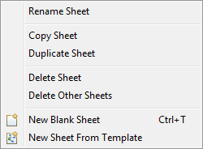
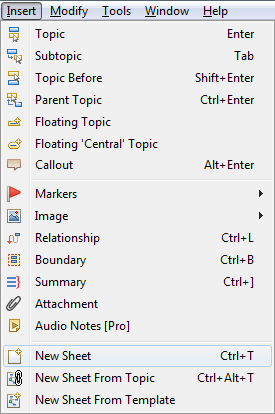
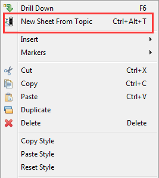

Workbook and multiple sheets
Every XMind file is considered a workbook. And one workbook can maintain multiple sheets, which are separate mind maps. It's so easy to create and modify the sheet.
To create a new blank sheet:There are several ways to create a new blank sheet.
- Use shortcut 'Ctrl+T'.
- From Sheet Context Menu:
- Right-click on the sheet name on the bottom of the editor viewer.
- Click New Blank Sheet.
- From Menu Commands: Insert Menu


There are 2 ways to create new sheet from template.
- From Sheet Context Menu:
- Right-click on the sheet name on the bottom of the editor viewer.
- Click New Sheet From Template.
- From Menu Commands: Insert Menu
There are several ways to create a new blank sheet.
- Use shortcut 'Ctrl+Alt+T'.
- From Menu Commands: Insert Menu
- From Topic Context Menu:
- Select a topic and right click.
- Click New Sheet From Topic.

- Right-click on the sheet name on the bottom of the editor viewer.
- From the context menu you can make the following changes:
- Rename this sheet.
- Copy Sheet.
- Duplicate Sheet.
- Delete the current sheet from the workbook.
- New Blank Sheets.
- New Sheet From Template.